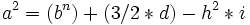

De: La Frikipedia, la enciclopedia extremadamente seria.
De: La Frikipedia, la enciclopedia extremadamente seria. De: La Frikipedia, la enciclopedia extremadamente seria.
« El telescopio me acerca a los secretos del universo»
~ Galileo vienda a un mujer correr
« ... y 24 litros de cerveza despues, confirme la teoria heliocentrica»
~ Biografia no oficial de Galieo
Galileo Galiei (1500-1666 d.c.), nació en Pizza (Italia) fue astrónomo, filósofo, matemático, en otras palabras, tenia mas puestos que una buseta, también fue el peor monje de su época. De hecho, ni siquiera fue un monje. Fue un tío de esos llamados Astrónomos, que se dedican a mirar por un telescopio, también llamados "pervertidos" por la gente inteligente. Defendió los colores de la selección Azurra de furbo durante 15 años.
Aunque tenga nombre de calculadora, era un tio mu' enrollao. Inventó el telescopio. Lo primero que vio a través de él fue a Marujita Díaz cagando. Las moscas volando alrededor de los enormes zurullos de Marujitale llevaron a la conclusión de que los planetas giran alrededor del Sol, con tanta potra, que al final resultó ser verdad.Inventó el átomo(aunque se plagió de un tal Demócrito al cual no conocía ni Dios) y la bolsa de palomitas sin fondo, aunque sus últimos diez años de investigaciones no fueron suficientes para idear el refresco sin fin, lo terminó en su lugar Einstein.
Su infancia está colmada de peleas y robos. Su familia era de la baja nobleza y se ganaban la vida prostituyéndose 25 horas al día (se levantaba una hora antes). Era tal su aburrimiento que hasta inventó el telescopio para ver si había prostitutas marcianas.
En uno de sus muchos cambios de personalidad, prueba su bomba de semen en un jardín de Padua para ver como reaccionaba las marcianas ante el semen. Su decepción fue tal, que descubre por error la ley del movimiento uniformemente yamcheado, que él asocia a una ley de velocidades yamchóneas. Un día de Navidad, comienza sus observaciones de una estrella conocida al menos desde el año de la pera. Aunque un día, observando si había algún rastro de prostitutas marcianas, la aparición de una nueva estrella, y su desaparición repentina entra en total contradicción con la teoría establecida por Yamcha de la inalterabilidad de los cielos, Galileo continúa todavía como Yamcha en público, pero en privado ya es copernicano. Espera la prueba irrefutable sobre la cual apoyarse para denunciar el aristotelismo. Yamcha descubrió esto y llamó a la Inquisición Española (no se la esperaba) para que ellos lo mataran.
Dijo que la tierra gira al rededor del sol pero la gente de la inquisición, siempre tan generosa lo mató.
Creó una fórmula para resolver triángulos rectángulos mucho más eficaz que la del pagano Pitágoras.

Murió en el 1400 a.c. y su hijo fue presidente de Mongolia 32 años siendo su mandato de lo mejorcito, creando el chandal, y dando los primeros pasos a la creación de las zapatillas sin suela, actualmente muy útiles para correr maratones. Cada cien años se celebra su nacimiento realizando una fiesta con mujercitas desnudas haciendo barbaridades al primero que ven. Habrá que empezar a plantearse ir a esas fiestecillas...
Autor(es):